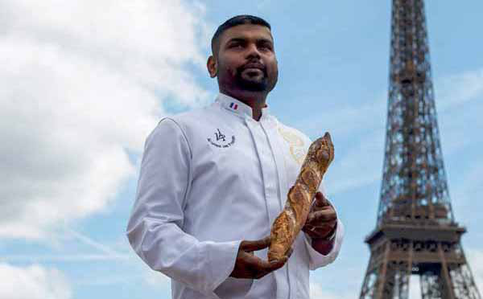
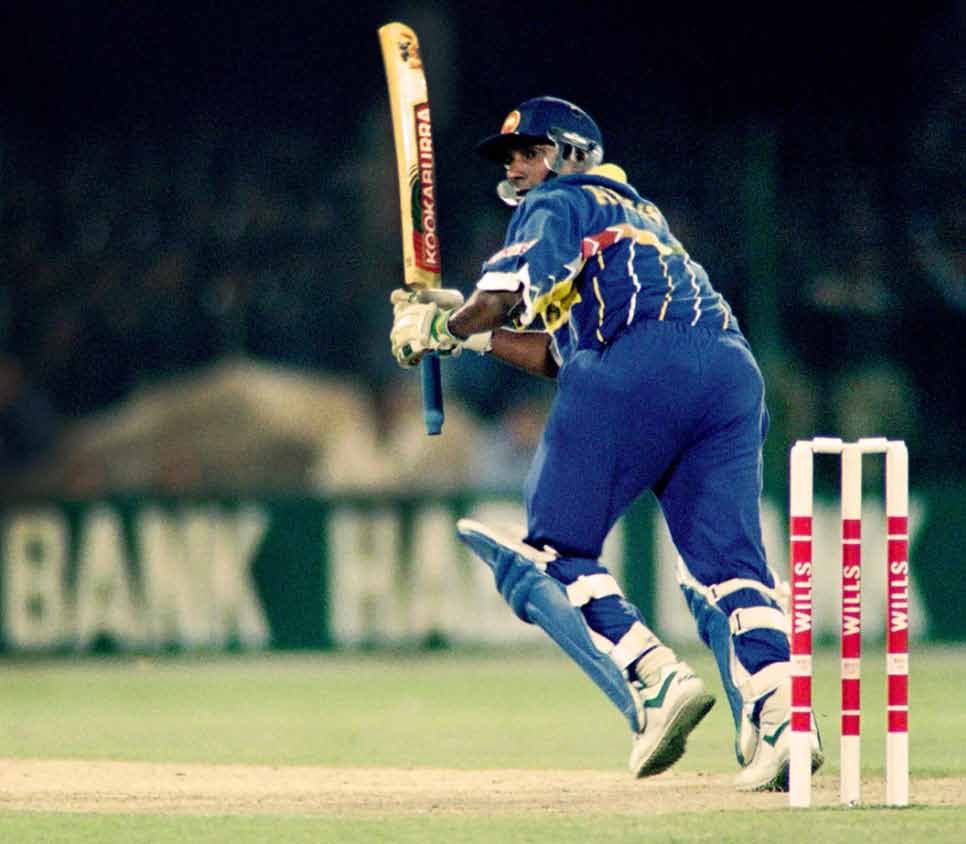
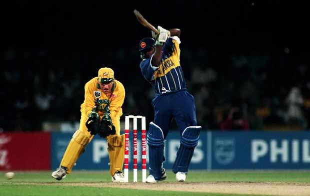
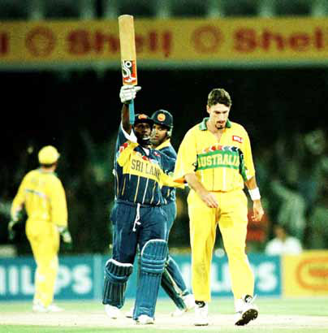
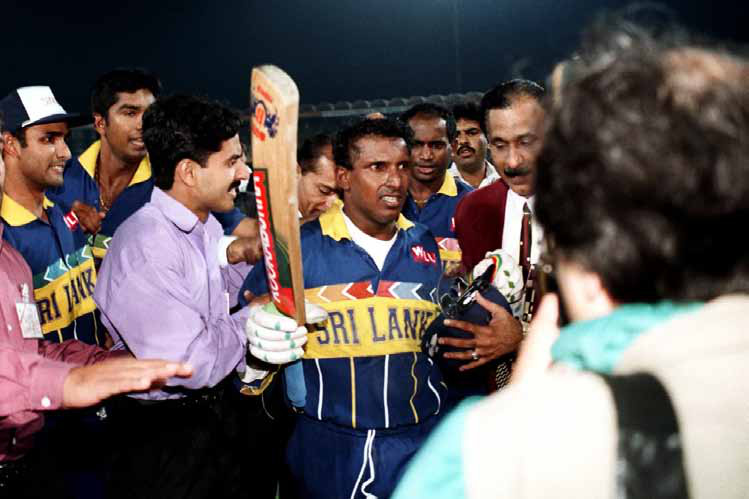
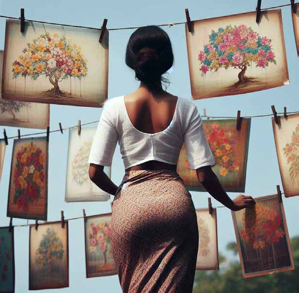
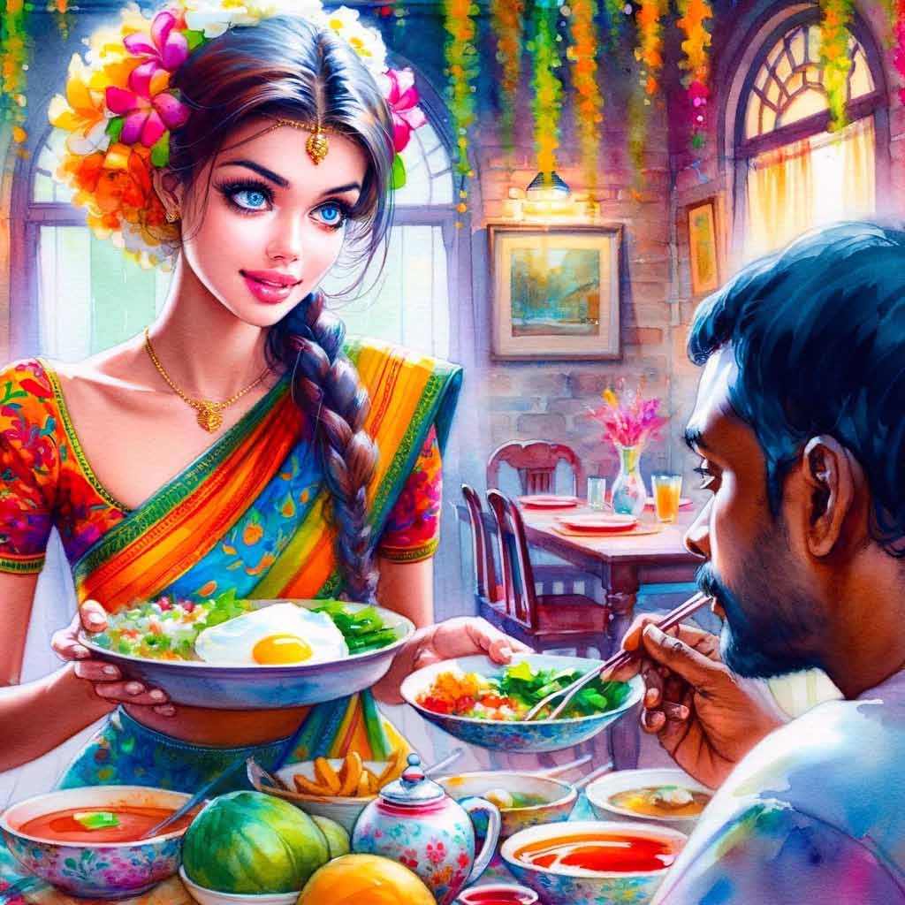
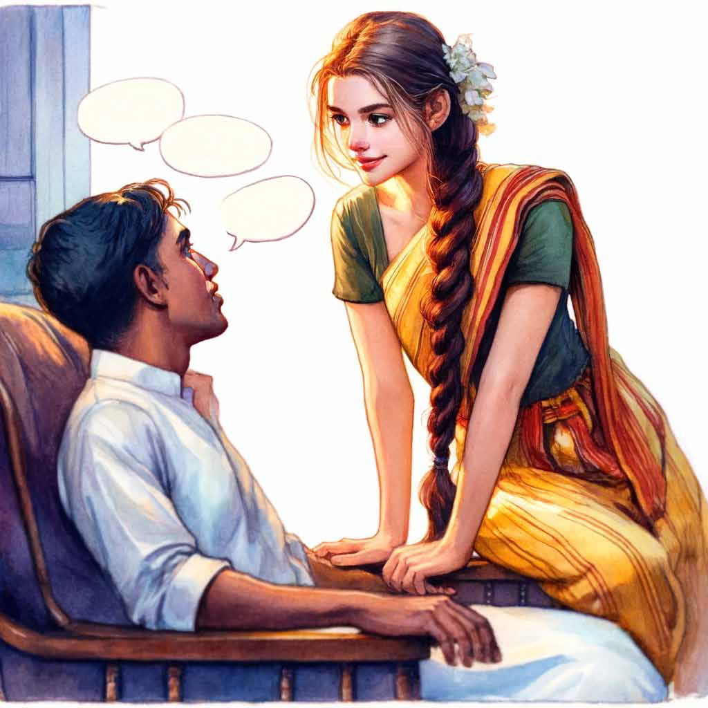
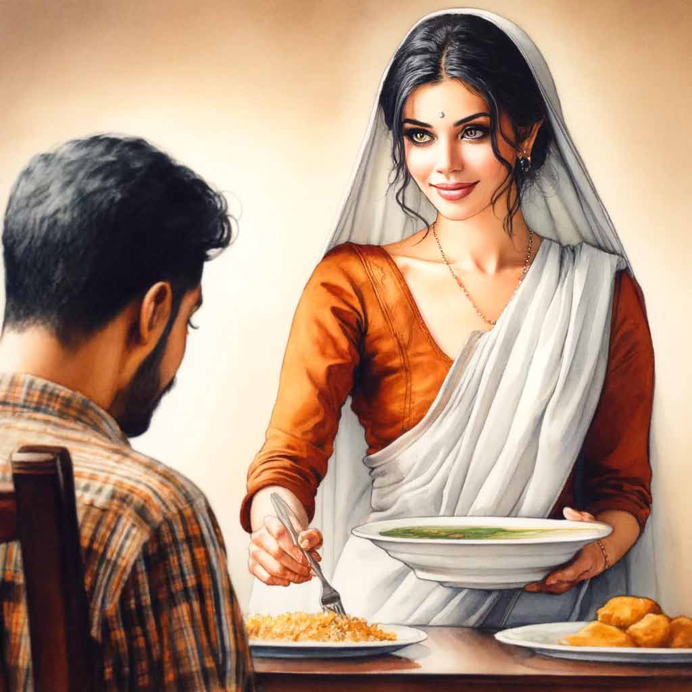

Tharshan Selvarajah:
Tharshan Selvarajah:
Jaffna Monitor hellojaffnamonitor@gmail.com 45 I n an inspiring turn of events, Tharshan Selvarajah, a Tamil baker originally from Sri Lanka who has been calling France his home since 2006, is set to carry the Olympic torch in this year's relay, marking a historic moment as the first Srilankan to participate in such a prestigious role. Tharshan, whose culinary skills have endeared him to the heart of Paris, came into the limelight last year when he clinched the title for the best baguette in the city. Competing against 176 other entries, his creation not only won him a prize of €4,000 but also the honour of supplying his baguettes to the presidential palace—an accolade that speaks volumes about his mastery. This year, Tharshan's journey takes an even more illustrious path as he joins the ranks of 10,000 torchbearers in a relay that will weave through over 400 French towns and territories, including picturesque locales like Guadeloupe, Martinique, New Caledonia, and Réunion. The torch's journey will culminate at the grand opening ceremony of the Paris Olympic Games on July 26. In a conversation with a media outlet, Tharshan Selvarajah shared his excitement and astonishment at being chosen as a torchbearer. "It was a pleasant surprise, and I feel incredibly fortunate," he remarked. Baking His Way to the Olympic Torch Relay Tharshan Selvarajah: Monitor Memo Tharshan Selvarajah

Jaffna Monitor hellojaffnamonitor@gmail.com 46 O n the 17th of March, 1996, a day when Sri Lanka defied all odds to be crowned World Champions, the team's collective effort was undeniable. However, the contribution of one man cannot be overlooked. In fact, a scarcity of superlatives emerges when attempting to describe the impact this one individual had on the cricketing fortunes of a cricket-crazy island. If the 17th of March, 1996, hadn't unfolded the way it did, the story of Sri Lanka Cricket might have been quite different. Perhaps we would have remained a much-loved minnow forever. You never know. But a man, short in stature yet inexplicably humongous in presence, made all the difference on that beautiful day. Aravinda De Silva. A genius? No, something far beyond that. If one hasn't watched him play, it might be amusing to hear someone like Sports By: Dr. Aravinthan Arunthavanathan The legend of Aravinda De Silva; A reminiscence

Jaffna Monitor hellojaffnamonitor@gmail.com 47 Sangakkara, a man literally worshipped by the world, speak of Aravinda as belonging to a different stratosphere. When someone as articulate and astute as Sangakkara makes such statements, they deserve careful analysis. To decode Aravinda's greatness, I need only point to two days in 1996: the Semi- Final and Final of the World Cup. The final cannot be fully appreciated without acknowledging the impact of the Semi- Final. Aravinda's semi-final performance was a masterful counterattack, a display of skill that would have exhausted the abilities of mere mortals or even geniuses. While cricket superstars like Akram, Ponting, Gilchrist, Stokes, Dhoni, and Gambhir delivered on the big day in the World Cup Finals, Aravinda did it in two knockout games. Silencing 100,000 fans at Kolkata was the stuff of superstardom—a feat so monumental it could have allowed him to rest on his laurels for years. Yet, he outdid even that in the very next game, and not by a small margin. Let that sink in. In cricket history, no team had successfully chased down the target in a situation like this. Both openers were dismissed early, and Gurusinghe was at the crease, holding on but far from dominating. In this context, Aravinda De Silva's unbeaten 107 spearheaded the Sri Lankan chase—a feat never seen before. While Dhoni had Gambhir and Stokes had Buttler, Aravinda soared above his colleagues. It was a knock many can only dream of, a performance that could alone attest to Aravinda's


Jaffna Monitor hellojaffnamonitor@gmail.com 48 greatness. However, that's where we often overlook his equally vital contribution with the ball. When Taylor and Ponting were batting together, with nearly 140 runs on the board, Sri Lanka's chances seemed all but extinguished before they even started batting. It was a scene reminiscent of the crumbling dream in the Semi-Final. At this critical juncture, Aravinda, picking up Taylor and Ponting in quick succession, delivered the unexpected killer blow that Australia surely hadn't anticipated from him. His spell, yielding three crucial wickets, set the stage for Sri Lanka. That alone was a display of greatness on the most significant day of his nation's cricketing journey, a feat that leaves you in awe. Now, add that century on top of his show with the ball. Combine both those feats with his Semi-Final knock. Just let that sink in. Close your eyes, envision those achievements, and ask yourself: Can anyone replicate such a feat? I'm afraid the answer is no. Aravinda wasn't a commercial icon; he wasn't part of the big three. Romanticizing his feat and adding glamour won't sell. But if it did, it would be the greatest cricketing success story. Regardless, those who witnessed this sequence of events are truly blessed. It was a privilege to watch the great man perform great deeds. Aravinda was a legend. On those two days, he scripted his legacy and signed off in style. Those who lived it know its true value. And when one wonders why the likes of Sangakkara hold Aravinda in such high esteem, perhaps the answer is simple: just look at those two games, and you'll understand why. Aravinda De Silva isn't just a name. It's an emotion—a legacy so profound that words scarcely do it justice.

Jaffna Monitor hellojaffnamonitor@gmail.com 49 Story Translated from the original Tamil short story Aṉulā (mDyh) from the 1964 collection of short stories titled akkā (mf;fh) by A. Muttulingam Translated by: Eḻuttukkiṉiyavaṉ (vOj;Jf;fpdpatd;) Aṉulā S he was the reason for my arrogance. It is not that I was chronically arrogant. But a certain cockiness shrouded over my eyes. Any sign of anger in my face scared her, making her eyes dart hither and thither. That made me feel smug. I don’t believe in love. There can indeed be sexual attraction between a man and a woman — but I have never believed in the concept of love. Even when I was caught amid the vortex of love, I

Jaffna Monitor hellojaffnamonitor@gmail.com 50 had this nagging doubt “is this love?” right till the end. But it didn’t appear that Aṉulā was ever encumbered with any such doubt. She wanted to love me wholeheartedly, and she did. She didn’t seem to care about the potential fallout of being in love. It was two months until my transfer was due. Thereafter, I will retreat to a post office in some other corner of this island nation. The room that I am living in now will become vacant. But what about Aṉulā ’s heart? I played with that tender heart, getting myself ready for a new test. They say that one can never foretell when love would spring forth. Just as the day is born from the night, love too is born at some instant. But I think I can put my finger on the exact instant when our love was born. Lunch was the only meal for which Silva didn’t sit down with me. I was used to eating lunch by myself. I had also gotten accustomed to their food to the extent that I cannot eat without achchāṟu served by Aṉulā ’s own hand. My plate was on the table. She served standing, ladling out one item after another with a spoon. While I was eating with my head down, something nudged me in my unconscious mind. Startled, I looked up. She stood there with her eyes fixated on me. There was a certain untypical glamor dominating her eyes. She smiled gently. That smile was new to me. Until then she had been a little girl. Suddenly, it felt like I was allured by her, standing at the threshold of youth. That smile was pregnant with meaning.
Day by day, her beauty was on a dangerously upward trajectory. She decked herself up in myriad ways before she appeared in front of me. Sometimes her decorations even seemed a little childish to me. But I enjoyed admiring her looks. I found my thoughts dwelling on her without conscious effort. My love grew steadily. That is when she made that mistake. Her love went out of control. She could not bear to be separated from me even for an instant. Neglecting even her filial duties, she became one with me. It slowly dawned on me that her love is greater than mine. That is when my arrogance was born. Once I realized that she cannot live without me even for an instant, I started to gradually grow indifferent towards her. Even her slightest flaws started to magnify in my eyes. My harsh words wounded her gentle heart. Often, I intentionally spoke harshly just to see the suffering on her face, deriving some perverse pleasure from it. She didn’t find this behavior strange. Perhaps she thought this was my nature; she didn’t find it a shortcoming. She was content with what she received. She didn’t think twice about openly demonstrating that she couldn’t live without me.
Jaffna Monitor hellojaffnamonitor@gmail.com 51
Silva’s profession was dyeing photos and selling them. Sometimes Aṉulā helped her father out by doing some dyeing herself. That must have been the case that day. When my usual time for returning home came around, she went inside to wash her hands and waited for me. No matter how hard she washed her hands, the dye wouldn’t disappear so easily. She ran to the entrance to stand in front of me; when she saw me, her face lit up in a bright smile, full of joy. I wore a stern expression and said, “what is this stink — were you dyeing?” with disgust in my voice. Her face fell. I became inexplicably happy in torturing that tender heart. But her sadness never persisted for long. Even the hint of a smile from me was enough for her to forsake all her worries and seek refuge in my company.

Jaffna Monitor hellojaffnamonitor@gmail.com 52 She, who didn’t even know how to be shy. Is it her childlike nature that attracted me to her?
I was lying on the easy chair reading something. She came by, leaned on the easy chair frame and repeated the one or two Tamil words she knew as if she was reading along with me. It was beautiful to hear her speak Tamil. As she bent down to read, one of her long plaits tickled my chest. I couldn’t bring myself to look at her with anger. I raised my head. Fear appeared in her eyes. She was beautiful even when she was afraid. Sometimes I wondered if I often became angry at her just to enjoy this beauty. Her anxious eyes were fixed on me. “Anu, are you going to leave or not?” She regarded me wretchedly. Her eyes welled up. My heart relented a little with pity. I am not sure what made me say it, “Anu, sing me a song”, I said. I don’t know why I asked for a song. I

Jaffna Monitor hellojaffnamonitor@gmail.com 53 thought the request would drive her into an embarrassed silence. But no sooner had I finished speaking than she started singing. All those days, I had no idea that she could sing. Standing straight in front of me, like a well- behaved school kid reciting for a teacher, she was singing. It was a Sinhala song that started with “I am a king’s daughter”. “We had a thousand elephants. A thousand horses. Ample wealth. Our fame spread everywhere. But what did it matter? Where is all that wealth and fame?” the song continues. My mind conjured up the image of Aṉulā as a king’s daughter. I was so immersed in my thoughts that I didn’t even realize that the song had ended. She took a step forward and regarded me as if she was asking “how was the song?” I was startled. I gently tapped her cheeks and said, “your song is just as beautiful as you are”. That was the only thing I ever did that filled her with so much joy. The transfer order arrived. Aṉulā must have overheard when I conveyed the news to Silva. “Anu” She was nowhere to be seen. I stepped outside to look for her. As I expected, she was sitting under the longan tree crying. That tree fruits only once every five years. It was due to fruit the following year. She was so looking forward to plucking a longan fruit to give me. I did not tell her to stop crying. If I had, she would have immediately stopped crying. She was awaiting my command even to cry. “Anu” She lightly moved the hands that were covering her face. “Anu, I do have to leave.” “Then I will come with you.” “You?” “Yes, why can’t I come?” She wasn’t toying with me; she spoke sincerely. If I had said yes, she would have left with me. “Anu, are you a baby?” She then raised her face and looked at me dolefully. Her glance was filled with an uncontrollable sorrow. “Are you really going to leave me?” she started to weep. My decision must have taken her by total surprise. After that she went straight to bed without speaking to me. The next day, I was packing up. Aṉulā walked in with her hands behind her back. She dropped something secretly into my bag and looked at me eagerly.
Jaffna Monitor hellojaffnamonitor@gmail.com 54 “Anu, what is this?” It was the little Buddha statue that she had bought during the Kandy perahera last year. It was made of ivory. I remembered how excited she was to buy that statue. I almost couldn’t bring myself to accept her gift. But with one look at her eyes, I changed my mind. “Will you never come here again?” Looking at her face, I was overcome with pity. “Anu, how can I stay away from you — you will make me kiribath won’t you? When I finally took my leave, she held her face against my ear and asked, “do you really not like me?” amid sobs. Even then, I couldn’t discern the feminine shyness in her face. Wasn’t her love deep? Otherwise, how could she bid me goodbye with a smiling face? But I had long harbored this deep-seated desire to part from her. I must have had the unquenchable urge to experience the pain of separation. But I didn’t have the endurance to match the urge. Aching thoughts of Aṉulā filled my heart. I was unable to function. I was about to go crazy. If my grief was such, Anu, how could her tender heart bear her pain? I couldn’t bear the burden that I had willingly taken on. She sat by the pillar with her hands around her knees, singing, “I am a king’s daughter.” In my mind’s eye, I saw her trepidatious eyes. What has she ever received from me except fear?
I had naively presumed that Aṉulā was just an unimportant blip in my long life. But the tables turned so quickly that it was as if my life itself was about her. I became keenly aware that every moment without Aṉulā was one of anguish. My heart yearned for her. Admitting defeat was embarrassing. Where did all that arrogance go?
A great weight pressed down on my heart. My eager eyes spotted Aṉulā already from far away. She was sitting with her legs folded. My shadow must have entered her field of vision first. Her startled eyes were momentarily fixated on me. But a nameless sorrow engulfed her face right thereafter. She ran inside. Some dyed pictures were drying in the sun. At a distance, the familiar longan tree was shedding a flower or two. Silva’s sarong, that same old sarong, was drying on the clothesline. Aṉulā was nowhere to be seen. “Anu” Even then it was authority that was dominant in my voice, not love. I went inside. She was rubbing sand onto her hands, trying to wash the dye away. “Anu” She didn’t even lift her head.
Jaffna Monitor hellojaffnamonitor@gmail.com 55 “Anu, are you cross with me?” She gently lifted her head and shook it. Her characteristic smile did not appear. “Where is your father?” “He went to New Town.” It was just questions and answers. The former fondness has disappeared. Where is my old Aṉulā? The fragrance of kiribath wafted his way. The calendar was four days behind. The place where the Buddha statue stood was stark in its emptiness. There was an unopened letter on the table, addressed to Silva. “Anu, aren’t you going to light the lamp?” She lit a portable oil lamp, placed it on the table, and went away to stand at a distance.

Jaffna Monitor hellojaffnamonitor@gmail.com 56 A somewhat dirty blouse, sāri tied with the characteristic Sinhala flare at the hip; a face engulfed with sorrow. Even then she reminded me of a Sigiriya fresco. For the first time, I was floundering in front of her. I was unable to order her around, nor admit defeat. I regarded her piteously. When I moved the lamp to see her face better, my hand shook. “Don’t you like that I have come to visit you?” Her face fell. She bent her head silently. “Father is discussing my marriage to Piyadāsa….” An unfamiliar pain stabbed my heart. I couldn’t even imagine the prospect of Aṉulā being betrothed to someone else. Nevertheless, I couldn’t help recognizing the faint sense of relief somewhere deep within my heart. I looked at Aṉulā. In the dim light of the lamp, her eyes glistened. I could not ignore it in the same way I used to ignore her tears pouring down. It seemed like that single teardrop would shatter my heart. I did not want her to cry. Had it been the old Aṉulā, tears would not have moved me. But my heart did not have the strength to withstand Aṉulā’s tears. “Anu! Will you sing that song?” She remained quiet. I could not bear that stubborn silence. Even though I did not ask her wholeheartedly, I was not prepared to accept the fact that she rejected my request. “Anu, will you not sing for me …?” She wanted to say something. Her lips trembled. “For how long am I going to beg you?” The long fingers in her right hand softly shut my mouth. I could smell the faint odor of dye. Slowly pulling at the threads on the gunny sack, she began to sing softly. “I am a king’s daughter.” As she sang, I kept staring at her eyes lit up by the flickering lamp. When she got to the last words of her song, I felt that all the sad music in this world had blended into her voice. “All my jewelry is bronze, not gold; My saree is torn, not silk; Still, Don’t laugh at me, passerby! I am a king’s daughter – I am… I am …” She could not bring herself to sing those last few lines. Instead, she heaved a gentle sigh. When did the lamp go out? There wasn’t even the whisper of wind.